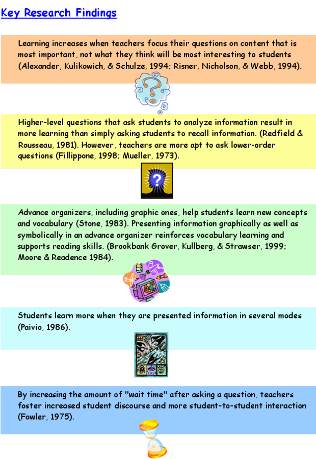
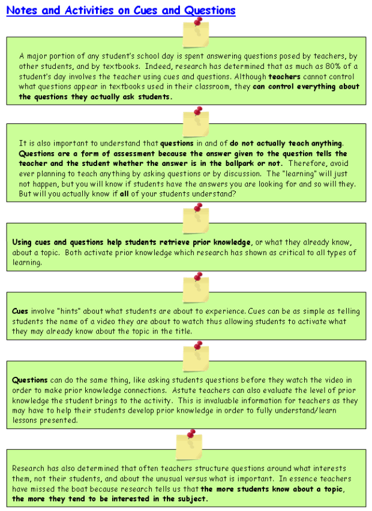
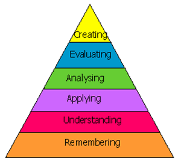
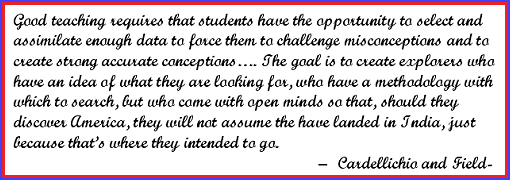

Frameworks
Cue, Questions and Advanced Organizers
*In this module, you will cover two strategies: Cues and Questions and Advanced Organizers.
Teachers set the stage for learning by finding out what students already know, then connect new ideas to students' existing knowledge base. Using a variety of instructional strategies, teachers guide students from the known to the unknown, from familiar territory to new concepts.
Cues, questions, and advance organizers are among the tools and strategies that teachers use to set the stage for learning. These tools create a framework that helps students focus on what they are about to learn.
Asking questions and prompting students' replies with cues are strategies that come naturally to most teachers. In fact, some 80 percent of student-teacher interactions involve cues and questions (Marzano, Pickering, & Pollock, 2001). By fine-tuning questioning strategies with insights from research, teachers can become even more effective at guiding students' learning.
Like questions, advance organizers are also commonly used to help set the stage for instruction. Since David Ausubel (1960) first described advance organizers as a cognitive strategy to help students learn and retain information, teachers have developed a variety of forms for effectively organizing learning. The K-W-L chart, for example, lists what students know, what they want to find out, and what they have learned (Ogle, 1986). Graphic organizers show how new ideas or concepts relate, providing students with a visual framework for acquiring and organizing new information.

Implementation
Teachers want the time spent planning and teaching to generate the most effective and sustained learning. By implementing the recommendations below focused on cues, questions, and advance organizers teachers can gain from research and maximize effort.
Pace yourself. Teachers commonly underestimate how often they ask questions in class. Use questions to help students focus on what is more important to learn. Remember to ask questions when you introduce new content, and not just at the end of a learning experience. Asking questions will not only tell you what students already know, but also whether they are starting with misunderstandings about a topic.
Ask higher-level questions. Think about how to phrase questions. By asking questions that require analysis, you prompt students to go beyond simple recall of information and help to develop their higher-order thinking skills.
Wait time matters. Give students time to think before jumping in with an answer to your own question. Pausing for just a few seconds is likely to generate better classroom discourse, including more conversation among students.
Preview the big picture. Help students see where you are going by giving them an overview of what a lesson or unit will cover.
Use multiple modes. Connect with diverse learning styles by presenting previews of information in multiple ways-visually with graphic organizers, verbally (aloud), and in writing.
� 2005 - Focus on Effectiveness is a product of the Northwest Regional Educational Laboratory. These materials are in the public domain and may be reproduced without permission. The following acknowledgment is requested on materials which are reproduced: Developed by the Northwest Regional Educational Laboratory, Portland, Oregon.

Content Focus: Code of Ethics

|
Take a few minutes and read through the three Ethics handouts:
|
|
|
After you have finished reading through the Ethics handouts, find the Activity 6 Summary Page for Cues, Questions, and Advanced Organizers. Watch this video clip as the instructor explains the difference between higher order thinking questions and lower order thinking questions. |
Now that you know the difference between the two, follow along with the next video clip and label the 8 questions that the instructor will ask. Classify the Question numbers as the instructor reads them aloud.
Remember, you are NOT answering the question, you are simply going to identify if the question is a Higher order thinking question or a Lower order thinking question.
Now that you really have an understanding of higher and lower order thinking questions, go back and write one higher order thinking question for the other ethics sheets:
o Professional Ethical Conduct, Practices and Performance
o Professional Ethical Conduct toward Professional Colleagues
Bloom has created a taxonomy of thinking levels. Take a look at the verbs that are associated with each level of thinking. It is important to balance your questioning with questions from ALL areas and require students to constantly flex their brains for successful learning. Below is a Hyperlink to various forms of Bloom's Taxonomy charts from which to choose.

Revised Bloom's Taxonomy site
 Blooms Taxonomy is a very useful tool in your daily lesson planning. Go on the internet and search for additional, user friendly formats and print it out for your Frameworks Notebook.
Blooms Taxonomy is a very useful tool in your daily lesson planning. Go on the internet and search for additional, user friendly formats and print it out for your Frameworks Notebook.
It will definitely come in handy when you begin to write lesson plans and objectives.
Watch the video clip as the class discusses their Higher order thinking questions.
BIG IDEA
HIGHER ORDER QUESTIONS PRODUCE DEEPER THINKING AND LEARNING. REMEMBER, HIGHER ORDER QUESTIONS REFER TO THE LEVEL OF THINKING REQUIRED TO RESPOND TO THE QUESTION OR COMMAND, NOT THE QUESTION ITSELF.
IMPORTANT REMINDER
PARTICIPANTS ARE RESPONSIBLE FOR THIS CONTENT ON THE TExES PEDAGOGY AND PROFESSIONAL RESPONSIBILITY EXAM.

Congratulations! You have completed your first module. Your Frameworks notebook is due on the first day of your face-to-face classes.